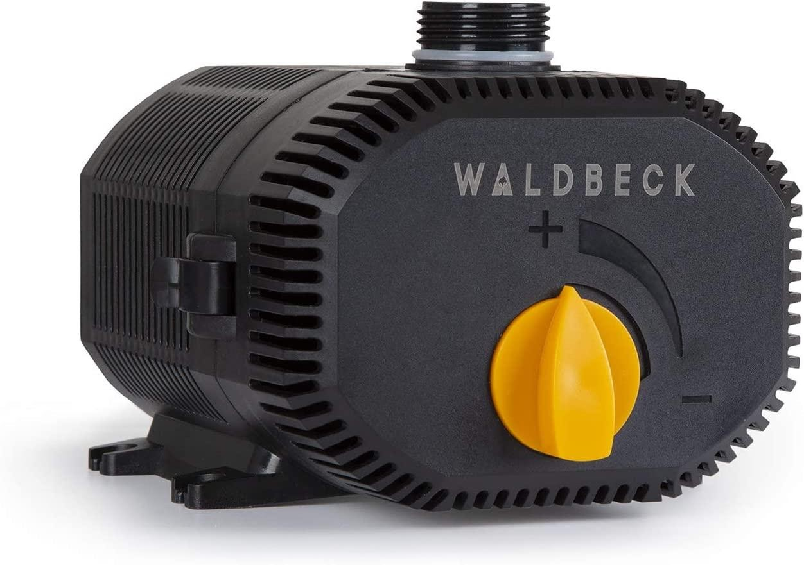
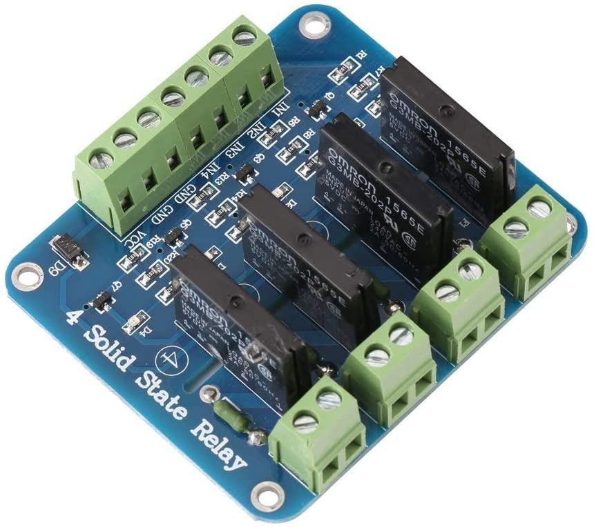
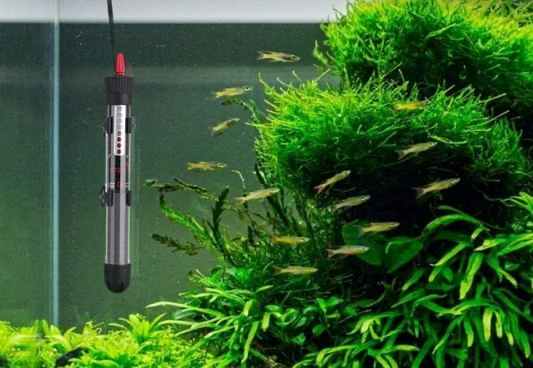

Bomba de agua sumergibleSubmersible water pump
Dos unidades. Una mueve agua hacia el depósito de inspiración; la otra la devuelve.Two units. One moves water to the inspiration tank; the other returns it.
OrígenesOrigins · 02 · SimpleSimple
Un recipiente grande que actúa como acumulador de agua y otro más pequeño llamado depósito de inspiración. La esencia del sistema, paso a paso, con cálculos. A large container that acts as a water reservoir and a smaller one called the inspiration tank. The essence of the system, step by step, with calculations.
Componentes principalesMain components

Bomba de agua sumergibleSubmersible water pump
Dos unidades. Una mueve agua hacia el depósito de inspiración; la otra la devuelve.Two units. One moves water to the inspiration tank; the other returns it.

Relés de potenciaPower relays
Conmutan los 220 V de cada bomba según las órdenes del temporizador.Switch each pump’s 220 V supply based on timer commands.

Calentador de acuarioAquarium heater
El mismo del subsistema de aire: mantiene el agua a temperatura.Same as in the air subsystem: keeps the water at temperature.
El modelo más simple que se puede usar para hacer un respirador es un recipiente grande que actúa como acumulador o depósito de agua, y uno más pequeño que llamamos depósito de inspiración. A la salida del bote que comprime el aire (en el vídeo, donde está montado el guante) se conecta el tubo del respirador a la mascarilla, que ha de tener una válvula para que la expiración salga de forma natural. The simplest model to build a ventilator is a large container that acts as a water reservoir and a smaller one we call the inspiration tank. At the output of the bottle that compresses the air (in the video, where the glove is mounted), the ventilator tube connects to a mask with a valve, so that exhalation occurs naturally.
En el vídeo se ven los materiales utilizados: una botella de leche vacía como depósito de inspiración, una botella de gel vacía como recipiente de inspiración y una caja de plástico transparente como depósito de agua del sistema. Dentro de la botella de leche tenemos una bomba de agua de acuario; dentro del depósito de agua del sistema, otra bomba. Las dos bombas están conectadas a dos relés controlados por un temporizador. In the video, the materials used are visible: an empty milk bottle as inspiration tank, an empty soap bottle as inspiration container, and a transparent plastic box as system water tank. Inside the milk bottle there is an aquarium water pump; inside the system water tank, another pump. Both pumps are connected to two relays controlled by a timer.
01 · Botella
Volumen superior a 700–1.000 ml; 1.200 ml es lo recomendable. Puede ser una botella, un tubo de metacrilato, PVC, metal — rígido, fácil de conseguir y con una boca arriba para conectar el tubo del respirador. Volume above 700–1,000 ml; 1,200 ml is recommended. It can be a bottle, a tube of methacrylate, PVC or metal — rigid, easy to obtain and with a mouth on top to connect the ventilator tube.
La botella invertida debe estar muy bien sujeta al depósito, sin moverse, y no perder aire al atornillarla a la pared del depósito de inspiración. Si la atraviesas para fijarla, sella con un material inerte (silicona) o con celo transparente no poroso. La presión no es muy alta y el celo aguanta. The inverted bottle must be firmly attached to the tank, not moving, and must not leak air when screwed to the wall of the inspiration tank. If you pierce it for fixing, seal with an inert material (silicone) or with non-porous clear tape. The pressure is not high and tape holds.
Posición: en el recipiente de inspiración, con la bomba en la parte inferior, deben quedar dos o tres dedos de agua sobre la bomba y un par hasta la base de la botella. Ese espacio se llena de aire al expirar y se cubre con la inspiración. Position: in the inspiration vessel, with the pump at the bottom, leave two or three fingers of water above the pump and a couple up to the base of the bottle. That space fills with air during expiration and is covered during inspiration.
02 · Cotas
Cota 0 — nivel mínimo de agua del depósito (puedes marcarlo).
Cota 1 — el agua empieza a cubrir la base de la botella que comprime el aire. A partir de aquí, el volumen de aire empieza a salir por el tubo.
Cota 2 — marca dentro de la botella, aproximadamente a 500 ml de la base. Es el nivel al que debe subir el agua dentro de la botella para garantizar que se envían 500 ml de aire al exterior.
Level 0 — minimum water level of the tank (you can mark it).
Level 1 — water starts to cover the base of the air-compressing bottle. From here on, the air volume starts to flow through the tube.
Level 2 — mark inside the bottle, roughly 500 ml from its base. This is the level the water must reach inside the bottle to guarantee that 500 ml of air is delivered to the outside.
En el ejemplo del vídeo, con una botella de unos 800 ml, se le quitó la base, se puso boca abajo con el tapón, se llenó de agua y se fue trasvasando a un recipiente marcado en 500 ml. Puedes añadir más graduaciones (600 ml, 400 ml, etc.) por si es necesario insuflar más o menos aire. In the video example, with a 800 ml bottle, the base was removed, the bottle placed upside down with the cap on, filled with water and decanted into a 500-ml-marked container. You can add more graduations (600 ml, 400 ml, etc.) in case more or less air needs to be insufflated.
03 · Bombas
Las dos bombas son bombas de agua de pecera. El caudal debe bastar para llenar 1 litro dentro de la botella de compresión, y depende del volumen del depósito de inspiración. Both pumps are aquarium water pumps. The flow must be enough to fill 1 litre inside the compression bottle, and it depends on the inspiration tank volume.
Mide o calcula la altura entre la cota 0 y la cota 2 dentro de la botella de inspiración. Multiplicada por el área del depósito de inspiración, obtienes los cm³ que la bomba debe mover. Measure or calculate the height between level 0 and level 2 inside the inspiration bottle. Multiplied by the area of the inspiration tank, you get the cm³ the pump must move.
Los respiradores trabajan entre 10 y 30 respiraciones por minuto. Hay que llenar esos 4,5 L 30 veces en un minuto. Como en cada ciclo se inspira y se expira, la frecuencia se duplica: 30 × 2 = 60. Ventilators work between 10 and 30 breaths per minute. We must fill those 4.5 L 30 times per minute. Since each cycle inhales and exhales, the rate doubles: 30 × 2 = 60.
Una bomba de este caudal es cara y poco común; conviene buscar la de mayor caudal disponible (casi todas tienen regulador para bajarlo). Una opción real es la Waldbeck Nemesis T90: 90 W, hasta 4 m de altura, IPX8, 6.200 L/h. A single pump for this flow is expensive and uncommon; look for the highest available flow (most have a regulator to lower it). A real option is the Waldbeck Nemesis T90: 90 W, up to 4 m head, IPX8, 6,200 L/h.
Con esa bomba se pueden alcanzar 10–12 respiraciones por minuto cómodamente, o emplear varias bombas para subir la frecuencia. Hay que comprobar siempre que la bomba elegida cabe físicamente en el depósito de inspiración. With that pump 10–12 breaths per minute are reached comfortably, or several pumps can be used to raise frequency. Always check that the chosen pump physically fits inside the inspiration tank.
04 · Relés
Las bombas de este caso funcionan a 220 V. De los dos hilos del enchufe, uno va al relé y el otro a uno de los polos. El otro borne del relé (parte de corriente alterna) se conecta al otro polo, cerrando el circuito. ⚠ Atención: corriente alterna — manejar con precaución. In this case the pumps run at 220 V. Of the two plug wires, one goes to the relay and the other to one of the poles. The other relay terminal (AC side) connects to the other pole, closing the circuit. ⚠ Caution: this is AC — handle with care.
Para soportar cortes y encendidos frecuentes con durabilidad, se recomienda un relé de estado sólido — por ejemplo, módulos DC-AC 5 V/2 A de 4 canales con fusible. Aguantan sin problema una carga de 440 W por bomba. To withstand frequent on/off cycles, a solid-state relay is recommended — for instance, DC-AC 5 V/2 A 4-channel modules with fuse. They handle a 440 W load per pump without issue.
05 · Control
Puedes usar el dispositivo que prefieras: si eres maker, una placa Arduino, un ESP32 o un M5Stack; si conoces PLCs, un Simatic, un Logo, un IOT2020; si programas y te gusta la Raspberry, también vale. Lo que importa es que el operador del respirador hablará en términos clínicos, ajenos a tu programación: piensa una interfaz humano-máquina que permita ajustar fácilmente el tiempo de respiración y/o el volumen de aire. Use the device you prefer: a maker can use Arduino, ESP32, M5Stack; with PLC experience, a Simatic, Logo or IOT2020; if you program and you like Raspberry, that works too. What matters is that the operator of the ventilator will speak in clinical terms, foreign to your programming: design a human-machine interface that lets them easily set breath time and/or air volume.
Una nota personal: pido disculpas a David Cuartielles y Massimo Banzi por usar en el vídeo un M5Stack en lugar de un Portenta H7 u otra placa Arduino original. Lo necesitaba rápido, con pantalla, y conocía bien sus dos núcleos para programación simultánea. Sin su trabajo en Arduino esto no habría sido posible. Lo que David y Massimo pusieron en marcha hace dos décadas fue una apuesta por que cualquier persona con una idea y un problema real pudiera construir la solución. En la primavera de 2020, millones de makers demostraron que tenían razón. Gracias a ellos, a su equipo y a toda esa comunidad. A personal note: my apologies to David Cuartielles and Massimo Banzi for using an M5Stack in the video instead of a Portenta H7 or another original Arduino board. I needed it fast, with a screen, and I knew its dual core well enough for simultaneous programming. Without their work on Arduino this would not have been possible. What David and Massimo set in motion two decades ago was a bet that anyone with an idea and a real problem could build the solution. In the spring of 2020, millions of makers proved them right. Thanks to them, their team and that whole community.
06 · Tiempos
El programa es muy simple: tres temporizadores activan dos salidas digitales. The program is very simple: three timers activate two digital outputs.
D es el tiempo total del ciclo en segundos (60/D = respiraciones por minuto). A es el tiempo en segundos en el que se insufla el volumen elegido. B es la pausa (opcional, lo decide el experto en ventilación) y C es el tiempo de expiración, durante el cual se activa la segunda bomba para devolver el agua al depósito. D is the total cycle time in seconds (60/D = breaths per minute). A is the time in seconds during which the chosen volume is insufflated. B is the pause (optional, decided by the ventilation expert) and C is the expiration time, during which the second pump is activated to return water to the tank.
Para llenar de la cota 0 a la cota 2 en el tiempo indicado conviene generar un tren de pulsos PWM en el tiempo A. Harán falta un par de pruebas para encontrar el ajuste adecuado. To fill from level 0 to level 2 in the given time, generate a PWM pulse train during time A. A couple of tests will be needed to find the right setting.
Una cosa más: ten una regleta con interruptor y una fregona a mano. La primera es para parar de golpe. La segunda, para cuando no llegues a tiempo. Lo sabemos por experiencia. One more thing: keep a power strip with a switch and a mop nearby. The first is to stop everything at once. The second, for when you don't get there in time. We know this from experience.